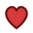
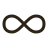
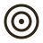
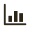
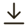
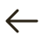
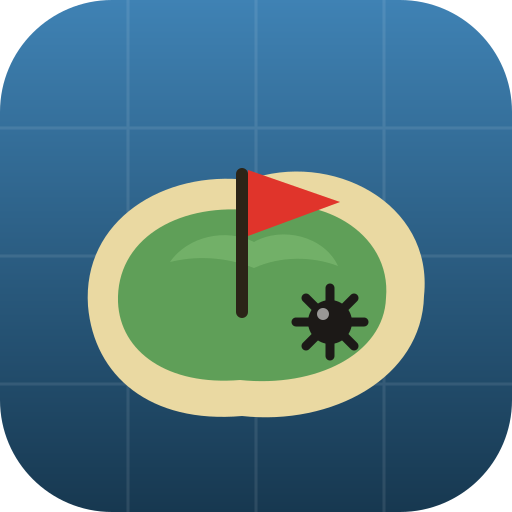
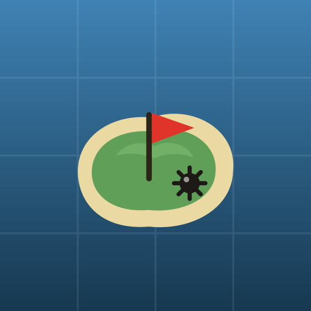
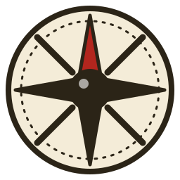

A flag placed on a hidden square (also the flag-mode button and the 🚩 counter).
A mine on the map (after a loss or when a heart is lost). Also used small as the mine counter (💣). The red square under an exploded mine is drawn by the game.
The oracle power-up under a revealed safe square, and the Oracle button.
The ice-clearer power-up under a revealed safe square, and the Ice clearer button.

The X on the treasure levels.

A heart you still have (HUD).
A heart you lost (HUD).

A level star you earned.
A level star you did not earn.

Island mode label (🏝) in the HUD, cards and the "Island cleared" dialog.

Endless mode label (♾).

Goal marker in the HUD (🎯).

Treasure goal in the HUD and the Free expedition button (🧭).

Distance in endless mode (📏).

Reveal-mode button (⛏).

Progress and Stats buttons (📊).

Back-to-centre button (⌖).

Menu button (☰).

See the island in 3D (🌍).

Restart (↻).

Look around / View (👁).
Mine hit / game over (💥).
Locked adventure level (🔒).
Finished islands (🏆).

Daily island (📅).
Adventure button (🗺).
Settings (⚙).

Install app (⬇).

Random seed (🎲).

Delete world (🗑).
Daily streak (🔥).

Music (♪).

Done / cleared (✓).
Lost / close (✕).
Direction arrows (→); the game rotates this one for ← ↑ ↓.

Back buttons (←).
Next level / Continue (▶).

Main app image: home-screen / install icon (rounded square; corners stay transparent).

Same picture, full bleed, no rounded corners. Keep everything important inside the central 80% circle: phones crop it.

Browser tab icon. Shown at 16-32 px, so keep the picture bold and simple.

The emblem on the main menu (a compass rose that is also a mine). The game name is written next to it as text.
My worlds button (🗂).

Audio is on (🔊), floating button on the main menu.

Audio is off (🔇).

Vibration is on (📳).

Vibration is off (📴).

Link to the author page (🐙), floating on the main menu.